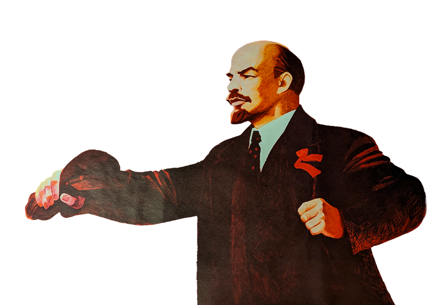
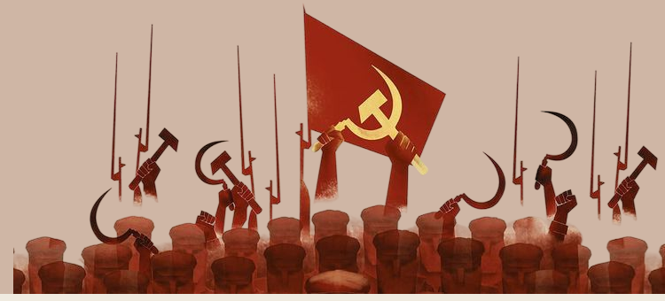
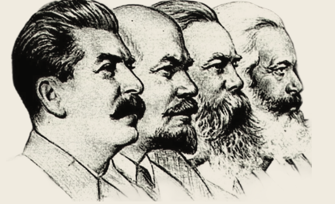
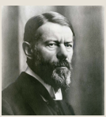
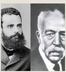
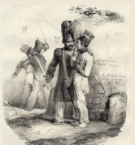
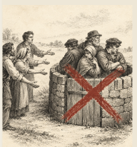

QUY MÔ XÃ HỘI
Là một tập đoàn xã hội lớn (không phải cá nhân riêng lẻ), tồn tại trong một thời kỳ lịch sử nhất định.

KHÁI NIỆM
Giai cấp là những tập đoàn người to lớn, khác nhau về địa vị trong hệ thống sản xuất xã hội, về quan hệ với tư liệu sản xuất, và về vai trò trong tổ chức lao động – do đó khác nhau về quy mô hưởng thụ của xã hội.
– V.I. Lênin, “Sáng kiến vĩ đại”, 1919 –

ĐẶC TRƯNG CỦA GIAI CẤP
Là một tập đoàn xã hội lớn (không phải cá nhân riêng lẻ), tồn tại trong một thời kỳ lịch sử nhất định.
Khác nhau về địa vị trong hệ thống sản xuất xã hội: người tổ chức, người sở hữu, người trực tiếp sản xuất…
Tư sản sở hữu tư liệu sản xuất. Công nhân không (hoặc gần như không) sở hữu → phải bán sức lao động. Ví dụ: trong xã hội chiếm hữu nô lệ, chủ nô sở hữu cả tư liệu sản xuất lẫn nô lệ → địa vị cao; nô lệ không sở hữu gì → địa vị thấp.
Tập đoàn nào nắm tư liệu sản xuất sẽ trở thành giai cấp thống trị xã hội và chiếm đoạt sản phẩm lao động của các tập đoàn khác. Ví dụ: nông dân làm ra sản phẩm nhưng bị địa chủ chiếm đoạt.
VÍ DỤ QUA LỊCH SỬ
CHIẾM HỮU NÔ LỆ
CHỦ NÔ – NÔ LỆ
PHONG KIẾN
ĐỊA CHỦ – NÔNG DÂN
TƯ BẢN CHỦ NGHĨA
TƯ SẢN – VÔ SẢN
NGUỒN GỐC

Sự phát triển của lực lượng sản xuất làm năng suất lao động tăng lên, xuất hiện của cải dư thừa – tạo tiền đề cho tập đoàn người này chiếm đoạt lao động của tập đoàn khác.
Quan hệ giai cấp quyết định khuynh hướng phát triển và tính chất của dân tộc.
“ GIAI CẤP KHÔNG TỒN TẠI từ đầu lịch sử loài người VÀ KHÔNG TỒN TẠI vĩnh viễn ”
KẾT CẤU XÃ HỘI – GIAI CẤP
Gắn với phương thức sản xuất thống trị. Ví dụ: chủ nô – nô lệ trong chế độ nô lệ; địa chủ – nông nô trong chế độ phong kiến.
Trí thức, tu hành… Trong một kết cấu xã hội – giai cấp, bao giờ cũng có hai giai cấp cơ bản và các tầng lớp trung gian tồn tại cùng nhau.
NGUYÊN NHÂN
Mâu thuẫn về lợi ích giữa các giai cấp
LỢI ÍCH ĐỐI LẬP MÂU THUẪN ĐẤU TRANH
CÁC HÌNH THỨC ĐẤU TRANH GIAI CẤP
Tiền lương, thời gian lao động, quyền lợi…
Nhằm giành hoặc tác động đến quyền lực chính trị, nhà nước. Hình thức cao nhất.
Quan điểm, lý luận, văn hóa… Ba hình thức không hoàn toàn tách rời, có thể tác động và hỗ trợ lẫn nhau.
VAI TRÒ
Đấu tranh giai cấp là một động lực trực tiếp và quan trọng của sự phát triển xã hội có giai cấp — góp phần giải quyết các mâu thuẫn xã hội, thúc đẩy sự biến đổi và phát triển của xã hội.
HAI XU HƯỚNG – V.I. LÊNIN
Cộng đồng dân cư, do ý thức dân tộc thức tỉnh và trưởng thành, muốn tách ra để thành lập các cộng đồng dân tộc độc lập.
Do sự phát triển của lực lượng sản xuất và giao lưu kinh tế – văn hóa, muốn liên hiệp lại với nhau.
Hai xu hướng này vẫn đang biến đổi, đan xen nhau: các dân tộc vừa muốn độc lập, giữ bản sắc riêng, vừa cần liên kết, hội nhập – không loại trừ nhau; cả hai đều là quy luật khách quan của thời đại.
BA NGUYÊN TẮC CỐT LÕI
Mọi dân tộc, dù lớn hay nhỏ, đều có quyền lợi và nghĩa vụ ngang nhau trên mọi lĩnh vực. Không dân tộc nào được giữ đặc quyền hay áp bức, bóc lột dân tộc khác. Bình đẳng phải thực hiện triệt để trong thực tế, gắn với việc xóa bỏ áp bức giai cấp – gốc rễ của áp bức dân tộc.
Là quyền tự quyết định vận mệnh chính trị của mình, không bị dân tộc khác can thiệp, áp đặt. Bao gồm quyền tách ra lập quốc gia độc lập, hoặc tự nguyện liên hiệp với dân tộc khác. Đặc biệt quan trọng với các dân tộc thuộc địa, phụ thuộc – là nền tảng lý luận cho con đường giải phóng dân tộc ở Việt Nam.
Liên hiệp công nhân tất cả các dân tộc. Phản ánh bản chất quốc tế của phong trào công nhân, là nội dung quyết định gắn kết hai nội dung trên. Công nhận các dân tộc tuy khác quốc gia, ngôn ngữ nhưng chung lợi ích; xóa bỏ áp bức, bóc lột. Thể hiện sự thống nhất giữa chủ nghĩa yêu nước chân chính và chủ nghĩa quốc tế của giai cấp công nhân.
Bình đẳng là cơ sở; tự quyết là điều kiện hiện thực hóa bình đẳng; liên hiệp công nhân là mục tiêu, định hướng cao nhất. Đây là nền tảng để Hồ Chí Minh kết hợp độc lập dân tộc với chủ nghĩa xã hội – không tuyệt đối hóa dân tộc mà bỏ giai cấp, cũng không ngược lại.
NHÂN LOẠI
Nhân loại là toàn thể cộng đồng người sống trên trái đất.
Bản chất xã hội của con người là cơ sở của tính thống nhất toàn nhân loại.
Sự tồn tại của nhân loại là tiền đề, điều kiện cho sự tồn tại của giai cấp và dân tộc.
GIAI CẤP
QUYẾT ĐỊNH
DÂN TỘC
DÂN TỘC
TÁC ĐỘNG NGƯỢC LẠI
GIAI CẤP
GIAI CẤP – DÂN TỘC
Trong lịch sử nhân loại, giai cấp có trước dân tộc hàng nghìn năm. Khi giai cấp mất đi, dân tộc vẫn còn tồn tại lâu dài. Trong một dân tộc có nhiều giai cấp, và ngược lại, một giai cấp có thể tồn tại trong nhiều dân tộc.
Quan hệ giai cấp quyết định khuynh hướng phát triển và tính chất của dân tộc.
Sự hình thành dân tộc mở ra những điều kiện thuận lợi hơn cho cuộc đấu tranh giai cấp.
Đấu tranh giải phóng dân tộc là điều kiện, tiền đề cho đấu tranh giải phóng giai cấp.
Một trong những đặc điểm chủ yếu của thời đại ngày nay là đấu tranh giai cấp và đấu tranh dân tộc gắn bó chặt chẽ với nhau.
→ Quan hệ giai cấp và dân tộc là quan hệ biện chứng hai chiều: giai cấp quyết định dân tộc, nhưng dân tộc cũng có tính độc lập tương đối và tác động mạnh mẽ trở lại giai cấp.
VỚI NHÂN LOẠI
Giai cấp, dân tộc và nhân loại có mối quan hệ biện chứng, tác động và ảnh hưởng lẫn nhau, không tách rời.
Trong xã hội có giai cấp, lợi ích nhân loại không tách rời lợi ích giai cấp, lợi ích dân tộc, và bị chi phối bởi lợi ích giai cấp và dân tộc.
Sự tồn tại của nhân loại là tiền đề, điều kiện cho sự tồn tại của giai cấp, dân tộc.
Sự phát triển của nhân loại tạo điều kiện thuận lợi cho đấu tranh giai cấp, đấu tranh dân tộc.
THẾ GIỚI – ĐỐI CHIỀU
Cách mạng Tháng Mười Nga – đối chiếu: không qua giai đoạn giải phóng dân tộc riêng, đấu tranh giai cấp diễn ra trực tiếp vì Nga không bị đô hộ.
Mao Trạch Đông: “cách mạng dân tộc dân chủ nhân dân” chống đế quốc kết hợp chống phong kiến, làm bàn đạp lên CNXH.
Làn sóng giải phóng thuộc địa (Ấn Độ, Indonesia, Algérie…): độc lập dân tộc trước, giải quyết vấn đề giai cấp trong nước sau.
Độc lập khỏi ảnh hưởng Mỹ, mở đường cải cách ruộng đất, bảo vệ lợi ích công – nông.
Phản đề: độc lập dân tộc nhưng chưa giải quyết triệt để giai cấp/đẳng cấp, bất bình đẳng còn dai dẳng.
Hậu Apartheid: hết áp bức dân tộc/chủng tộc nhưng bất bình đẳng giai cấp vẫn sâu sắc.
| Thời Kỳ | Giai Cấp | Dân Tộc |
|---|---|---|
| CÔNG SẢN NGUYÊN THỦY | Chưa xuất hiện công cụ và tư liệu sản xuất, chưa có tư hữu, chưa có bóc lột. | Chưa hình thành, cộng đồng người tồn tại ở dạng thị tộc, bộ lạc dựa trên huyết thống. |
| CHIẾM HỮU NÔ LỆ | Giai cấp đầu tiên xuất hiện: chủ nô – nô lệ; tư hữu về tư liệu sản xuất (kể cả con người) hình thành. | Chưa hình thành đầy đủ, mới ở dạng liên minh bộ lạc, chưa có kinh tế – thị trường thống nhất. |
| PHONG KIẾN | Địa chủ (quý tộc), nông nô/nông dân; bóc lột địa tô. | Bắt đầu có tiền đề (nhà nước tập quyền, lãnh thổ ổn định) nhưng kinh tế còn phân tán, tự cung tự cấp. |
| TƯ BẢN CHỦ NGHĨA | Tư sản – vô sản; mâu thuẫn giai cấp gay gắt nhất, làm nảy sinh học thuyết đấu tranh giai cấp của Mác. | Hình thành rõ nét nhất: TBCN cần thị trường thống nhất, ngôn ngữ chung, nhà nước quản lý thống nhất lãnh thổ. |
| XÃ HỘI CHỦ NGHĨA (QUÁ ĐỘ) |
Giai cấp công nhân lãnh đạo, xóa dần chế độ tư hữu; giai cấp bóc lột dần bị xóa bỏ nhưng giai cấp nói chung vẫn còn trong giai đoạn quá độ. | Tiếp tục tồn tại, được đảm bảo quyền bình đẳng – tự quyết theo cương lĩnh dân tộc của Lênin. |
| CỘNG SẢN CHỦ NGHĨA | Tiêu vong hoàn toàn – hết tư hữu, hết bóc lột, hết phân chia giai cấp; nhà nước (công cụ của giai cấp) tiêu vong theo. | Các dân tộc xích lại gần nhau (xu hướng liên hiệp đạt mức cao nhất); bản sắc văn hóa – ngôn ngữ được bảo tồn như một cộng đồng văn hóa, không tiêu vong theo cùng cơ chế với giai cấp/nhà nước. |
KẾT LUẬN
Giai cấp và nhà nước tiêu vong cùng nhau (vì nhà nước là công cụ của giai cấp thống trị); còn dân tộc vì là cộng đồng văn hóa, lịch sử lâu dài, không đơn thuần là công cụ giai cấp, có tính bền vững hơn hẳn, tồn tại xuyên suốt và có thể tiếp tục ngay cả khi giai cấp không còn.
| Tiêu chí | Giai Cấp | Dân Tộc |
|---|---|---|
| CƠ SỞ HÌNH THÀNH | Quan hệ sở hữu đối với tư liệu sản xuất | Lãnh thổ chung, ngôn ngữ chung, kinh tế chung, văn hóa – tâm lý chung |
| THỜI ĐIỂM RA ĐỜI | Ra đời trước, gắn với chế độ tư hữu và phân công lao động | Ra đời sau, hình thành cùng quá trình liên kết bộ lạc – thị tộc thành cộng đồng ổn định, gắn với nhà nước |
| TÍNH BỀN VỮNG | Không vĩnh viễn – gắn với một phương thức sản xuất, mất đi khi phương thức đó bị xóa bỏ | Tồn tại lâu dài, xuyên suốt nhiều phương thức sản xuất; giai cấp mất đi nhưng dân tộc vẫn còn |
| PHẠM VI TỒN TẠI | Có thể tồn tại xuyên dân tộc (một giai cấp có mặt ở nhiều dân tộc) | Bao gồm nhiều giai cấp khác nhau trong nội bộ |
| VAI TRÒ TRONG MỐI QUAN HỆ |
Quyết định khuynh hướng phát triển, tính chất của dân tộc | Có tính độc lập tương đối, tác động ngược trở lại đấu tranh giai cấp |
| Tiêu chí | Xu hướng phân lập | Xu hướng liên hiệp |
|---|---|---|
| ĐỘNG LỰC | Ý thức dân tộc thức tỉnh, trưởng thành | Lực lượng sản xuất phát triển, giao lưu kinh tế – văn hóa |
| BIỂU HIỆN | Đòi độc lập, tách ra thành cộng đồng dân tộc riêng | Liên kết kinh tế, chính trị, văn hóa giữa các dân tộc |
| VÍ DỤ MINH HỌA | Các phong trào giải phóng dân tộc thuộc địa thế kỷ XX | Các liên minh, tổ chức khu vực/quốc tế (EU, ASEAN…), toàn cầu hóa kinh tế |
| QUAN HỆ GIỮA HAI XU HƯỚNG |
Vận động biện chứng, đan xen, không loại trừ nhau – cả hai đều là quy luật khách quan của thời đại | Vận động biện chứng, đan xen, không loại trừ nhau — cả hai đều là quy luật khách quan của thời đại |
VỀ GIAI CẤP
NHỮNG HƯỚNG TIẾP CẦN KHÁC NHAU

Phân tầng xã hội
có nhiều chiều
Xã hội phân tầng theo ba chiều tương đối độc lập – giai cấp (địa vị kinh tế), địa vị (uy tín xã hội) và đảng phái (quyền lực chính trị). Khác Mác ở chỗ không quy mọi bất bình đẳng về một gốc duy nhất là sở hữu tư liệu sản xuất.
Bất bình đẳng có
chức năng xã hội
Bất bình đẳng xã hội có chức năng tích cực: cần thiết để phân bổ nhân lực vào những vị trí quan trọng – đối lập với quan điểm Mác coi đó là sản phẩm của bóc lột, cần bị xóa bỏ.

Sự thay thế của
các nhóm tinh hoa
Lịch sử là quá trình thay thế lẫn nhau giữa các nhóm tinh hoa cầm quyền, không nhất thiết là đấu tranh giai cấp theo nghĩa của Mác.
VỀ DÂN TỘC
HAI CÁCH LÝ GIẢI VỀ NGUỒN GỐC DÂN TỘC
01 / TỪ NHỮNG GẮN BÓ LÂU ĐỜI
Primordialist View
Dân tộc có gốc rễ tự nhiên, lâu đời, dựa trên huyết thống, văn hóa cổ xưa – khác quan điểm duy vật lịch sử coi dân tộc là phạm trù lịch sử, gắn với sự ra đời của xã hội có giai cấp và nhà nước.
02 / SẢN PHẨM CỦA THỜI HIỆN ĐẠI
Anderson, Gellner, Hobsbawm
Dân tộc là sản phẩm của hiện đại hóa, công nghiệp hóa và truyền thông – Anderson gọi đó là “cộng đồng tưởng tượng”, Hobsbawm nói đến “truyền thống được phát minh”. Gần với quan điểm Mácxit nhưng nhấn mạnh yếu tố văn hóa – truyền thống hơn quan hệ sản xuất.
PHÊ PHÁN NỘI BỘ – LÊNIN
Lênin phê phán hai khuynh hướng lệch lạc về dân tộc trong phong trào cộng sản:

Chủ nghĩa dân tộc của dân tộc lớn, mạnh, áp đặt lên các dân tộc khác – vi phạm nguyên tắc bình đẳng dân tộc.
CHỐNG ÁP ĐẶT, BẢO VỆ BÌNH ĐẲNG

Dân tộc nhỏ tự cô lập, không chịu liên hiệp – vi phạm nguyên tắc đoàn kết quốc tế của giai cấp công nhân.
CHỐNG CÔ LẬP, HƯỚNG TỚI LIÊN HIỆP
MỞ RỘNG
Toàn cầu hóa kinh tế làm cho đấu tranh giai cấp mang tính xuyên quốc gia hơn (chuỗi cung ứng toàn cầu, công nhân nhiều nước cùng chịu tác động từ các tập đoàn tư bản xuyên quốc gia).
Xu hướng dân tộc chủ nghĩa, bảo hộ mậu dịch trỗi dậy ở nhiều nước như một phản ứng với toàn cầu hóa – minh chứng cho tính thời sự của quy luật biện chứng “phân lập – liên hiệp” mà Lênin đã chỉ ra.
Các vấn đề chung của toàn nhân loại (biến đổi khí hậu, đại dịch, an ninh mạng…) đòi hỏi hợp tác vượt qua biên giới giai cấp – dân tộc, nhưng cách các quốc gia giải quyết những vấn đề này trên thực tế vẫn bị chi phối bởi lợi ích giai cấp và lợi ích dân tộc (ví dụ: các cuộc đàm phán khí hậu quốc tế giữa nhóm nước phát triển và đang phát triển).
Giai cấp ra đời từ sự phát triển của lực lượng sản xuất và chế độ tư hữu, là những tập đoàn người khác nhau về quan hệ với tư liệu sản xuất, địa vị và cách hưởng thụ của cải xã hội.
Lợi ích giai cấp đối lập nảy sinh đấu tranh giai cấp - động lực trực tiếp của sự phát triển xã hội có giai cấp, biểu hiện qua ba hình thức: kinh tế, chính trị, tư tưởng.
Dân tộc là hình thức cộng đồng người phát triển cao hơn thị tộc, bộ lạc, vận động theo hai xu hướng phân lập và liên hiệp, được Lênin khái quát thành cương lĩnh dân tộc: bình đẳng - tự quyết - liên hiệp công nhân.
Nhân loại là cộng đồng người rộng nhất, có tính thống nhất dựa trên bản chất xã hội của con người, đồng thời là tiền đề tồn tại của giai cấp và dân tộc.
Giai cấp - dân tộc - nhân loại gắn bó biện chứng với nhau, thực tiễn cách mạng Việt Nam là minh chứng: giải phóng dân tộc là tiền đề của giải phóng giai cấp.